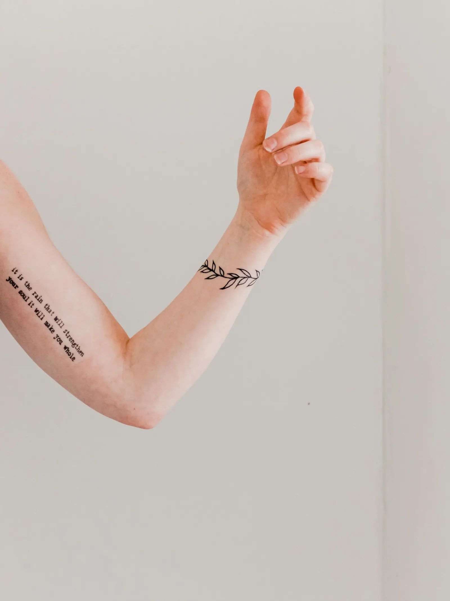

Tattoo studio
Inkt met rust, aandacht en een eerlijk woord.
Bij JER. neem je plaats in een studio waar je je meteen welkom voelt. Je idee krijgt de tijd die het verdient, je krijgt eerlijk advies en je gaat naar huis met een tattoo waar je jaren later nog even blij mee bent.
5,0★★★★★
uit 16 reviews op Google
uit 16 reviews op Google


ookfreehand